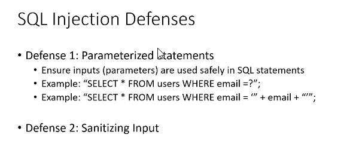

So in defense 1 first example should be followed rather than the second example
Sanitize means specify rules ki end mai cant have '' ' "
MAINLY parameterized statemnts
send parameterised statemnts is the takeaway
parameterised string is sent differnely from paramets